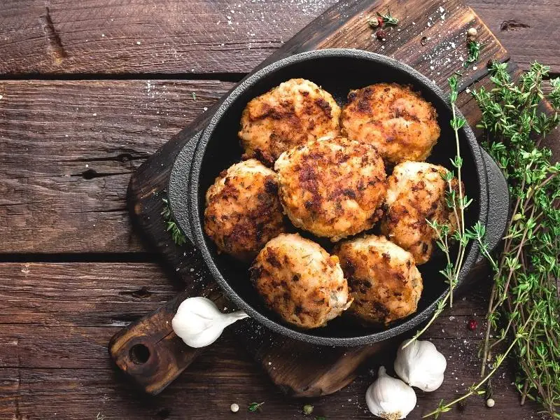

Omas Buletten

Das ist ein Rezept für Buletten das ich von meiner lieben Omi gelernt habe. :)
- 1 Brötchen vom Vortag
- 1 große Zwiebel
- 500 g gemischtes Hackfleisch
- 1 Ei
- 1 EL mittelscharfer Senf
- 1 TL Salz
- 1/2 TL gemahlener Pfeffer
- 2-3 EL Butterschmalz
- Brötchen in reichlich Wasser legen und 10 Minuten einweichen. Nach ca. 5 Minuten einmal umdrehen.
- In der Zwischenzeit Zwiebel schälen und sehr fein würfeln. Damit die Zwiebel milder, weicher und bekömmlicher wird, kann sie in etwas Öl angedünstet werden.
- Brötchen gut ausdrücken. Hack, Brötchen, Ei, Zwiebel und Senf in eine Schüssel geben. Mit Salz und Pfeffer würzen. Mit den Händen gründlich verkneten, dann mit angefeuchteten Händen je nach gewünschter Größe 6-12 Frikadellen formen.
- Butterschmalz in einer großen Pfanne erhitzen. Nur so viele Frikadellen in die Pfanne legen, dass ca. die Hälfte der Pfanne gefüllt ist. Sonst wird das Bratfett kalt und aus den Frikadellen tritt Flüssigkeit aus. Bei mittlerer Hitze von jeder Seite 6-8 Minuten braten. Erst wenden, wenn sich unten eine Kruste gebildet hat. Aus der Pfanne nehmen und auf Küchenpapier abtropfen lassen. Rest Frikadellen auf die gleiche Weise braten.
- Fertige Frikadellen können bis zum Servieren im Ofen bei ca. 50 °C warmgehalten werden.